What is Protein?
Proteins are made of 21 amino acids.
AAs are composed of carbon, oxygen, nitrogen, hydrogen and sulfur.
Carboxyl group + Amino group + Side chain. All attached by the central carbon atom.
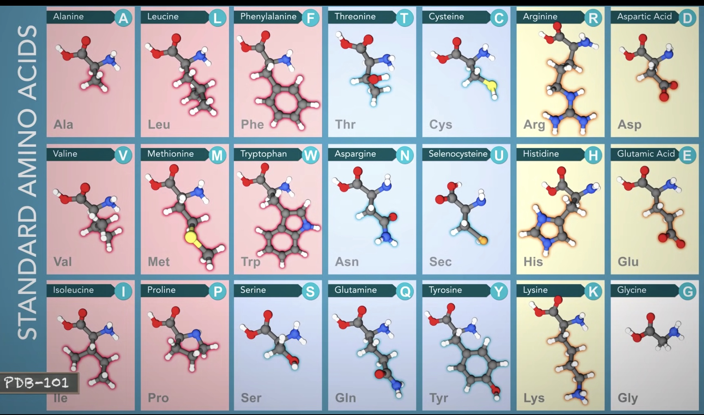
Hydrophobic Amino Acids have carbon-rich side chains, which do not interact well with water.
Hydrophilic(polar) Amino Acids interact well with water.
Charged Amino Acids interact with oppositely charged amino acids or other molecules.
Protein Structure
Primary Structre
Linear sequence of aino acids as encoded by DNA.
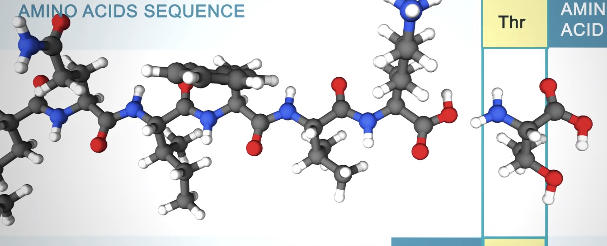
The amino acids in a protein are joined by peptide bonds, which link the amino group of one amino acids to the carboxyl group of another.
Secondary Structure
Alpha helix and Beta sheet
Alpha helix
Right-handed coil stabilized by hydrogen bonds between the amine and carboxyl groups of nearby amino acids.
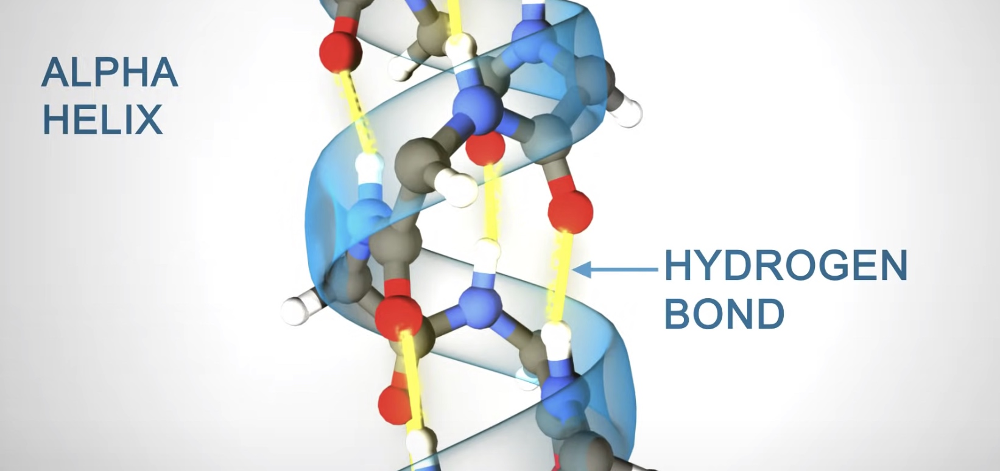
Beta Sheet
Formed when hydrogen bonds stabilize two or more adjacent strands.
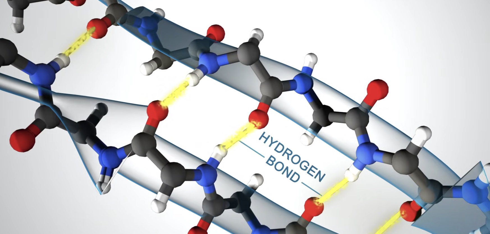
Tertiary Structure
Three dimensional shape of the protein chain. This shape is determined by the characteristics of the amino acids making up the chain.
Many proteins form globular shaped with hydrophobic side chains sheltered inside, away from the surrounding water molecule.
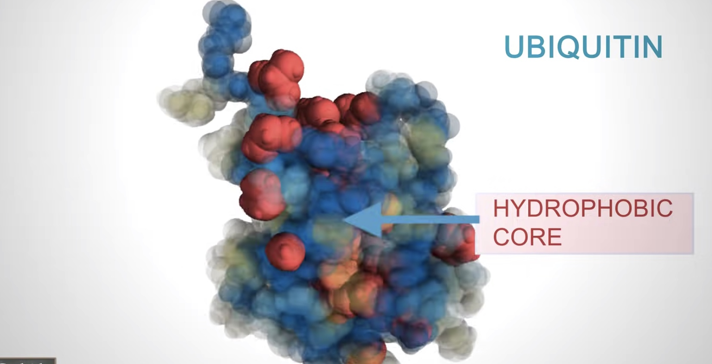
The function of many proteins rely on their 3D shapes.
Hemoglobin forms a pocket to hold heme, a small molecule with an iron atom in the center that binds oxygen.
The Quaternary Structure
Two or more polypeptide chains can come together to form one functional melicule with several subunits.
The four subunits of hemoglobin cooperate so that the complex can pick up more oxygen in the lungs.
Protein Representation
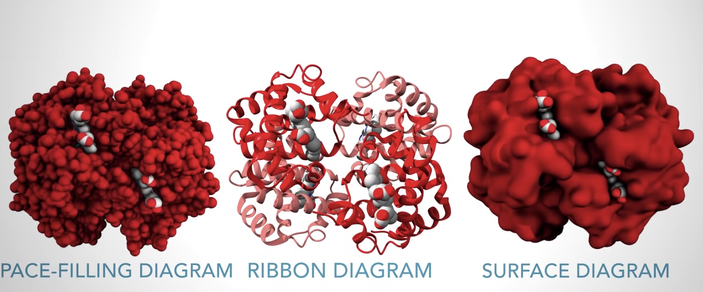
Protein size
Most proteins are smaller than the wavelength of light.
Hemoglobin is about 6.5 nanometer in size.
Shapes and function
The 3D shapes of proteins determine their function.
Defense(antibody)
The flexible arms of antibodies protect us from disease by recognizing and binding to pathogens and targeting them for destruction by the immune system.
Transport(calcium pump)
Communication(insulin)
Storage(ferritin )
Enzymes(alpha-amylase)
Structure(collagen)
How do secondary and tertiary structures fold?
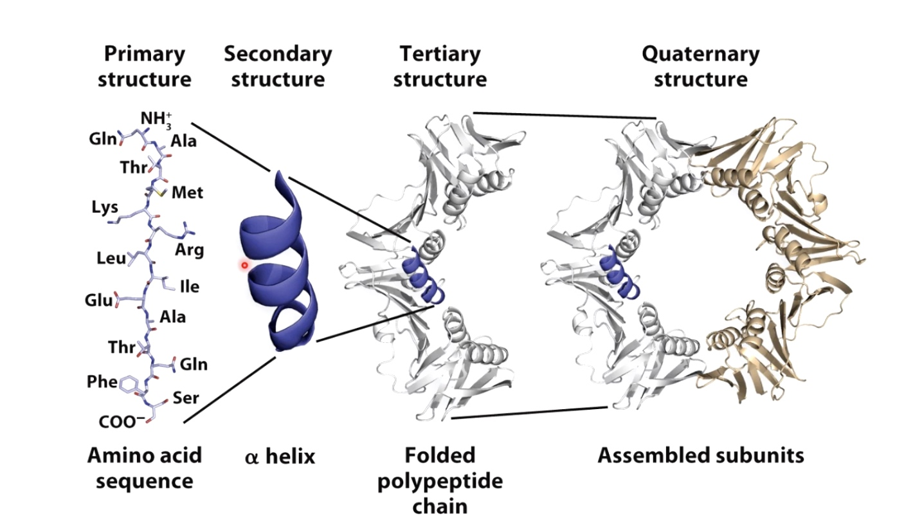
Alpha Helix
Alpha helices form to maximize hydrogen bonding between the carbonyl and amino groups.
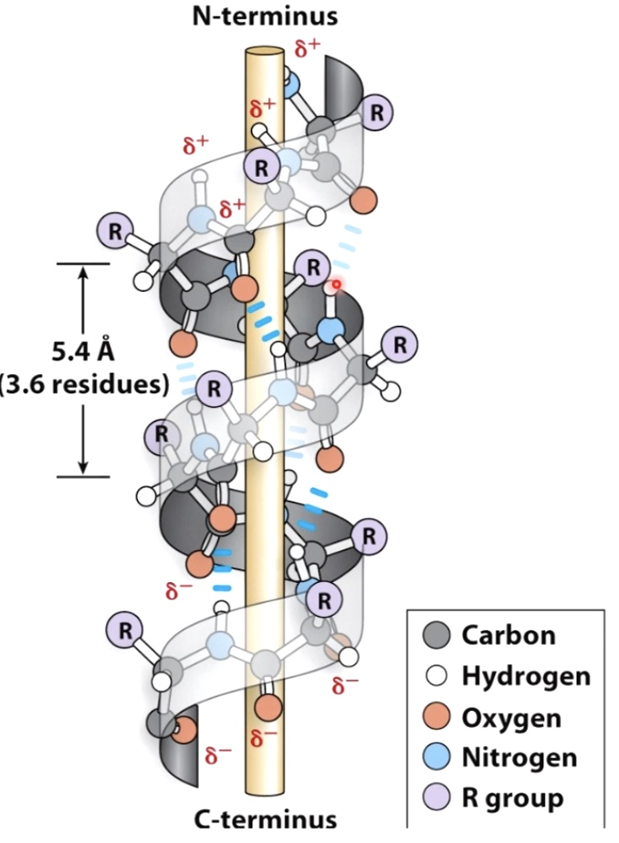
- Usually 10-15 amino acids long.
- R groups extrude from the helix and can form bonds with other parts of the protein to create tertiary structure.
Beta Sheets
Also maximize H-bonding Potential
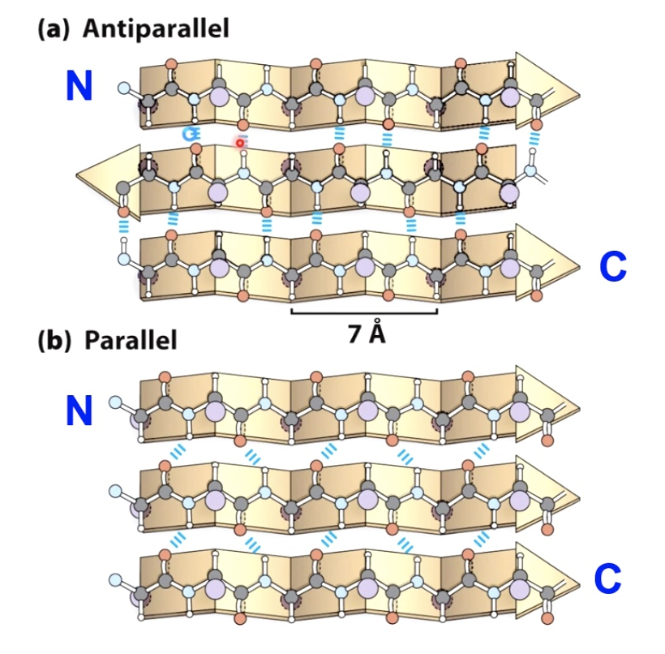
R groups extrude above and below the plane, can interact with oter parts of the protein.
Beta and Gamma Turns will link secondary structural elements
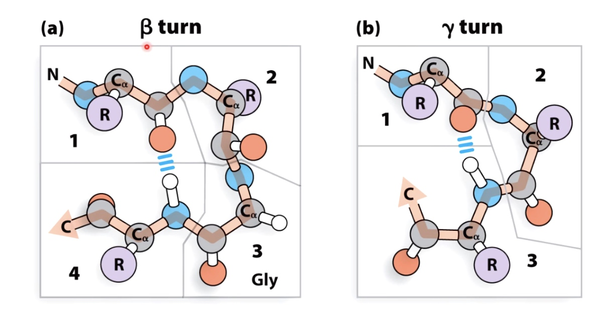
Glycine often found in turns because of the small size of the side chain.
Proline often found at beginning of turns because the unique confirmation of the peptides bonds in proline allows tight turns to occur .
Beta turns are more common then gamma turns.
Supersecondary structures with alpha helices.
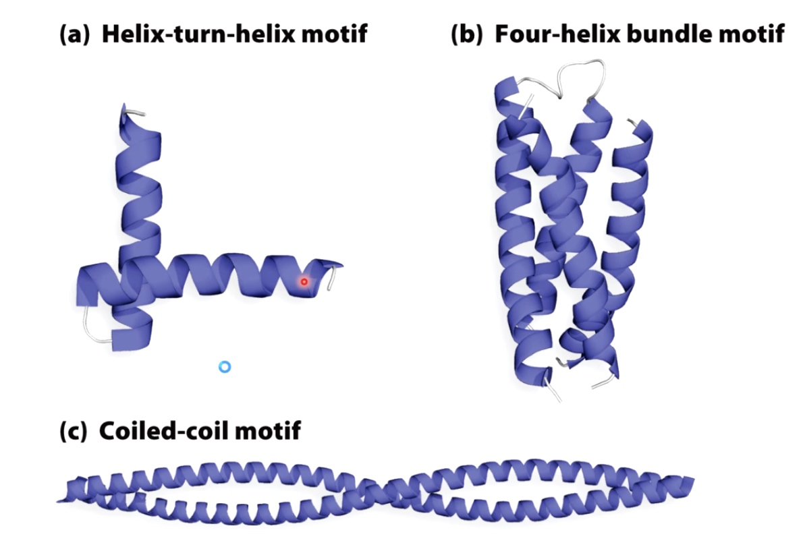
Helix-turn-helix is very commnonly found in transcription factors that regulate gene expression.
Supersecondary structures with beta sheets.
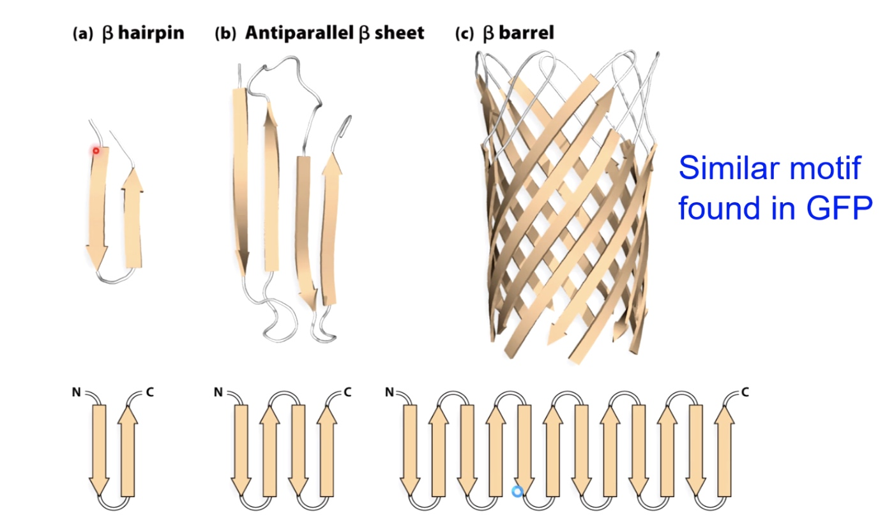
Many Proteins are Modular(have multiple domains)
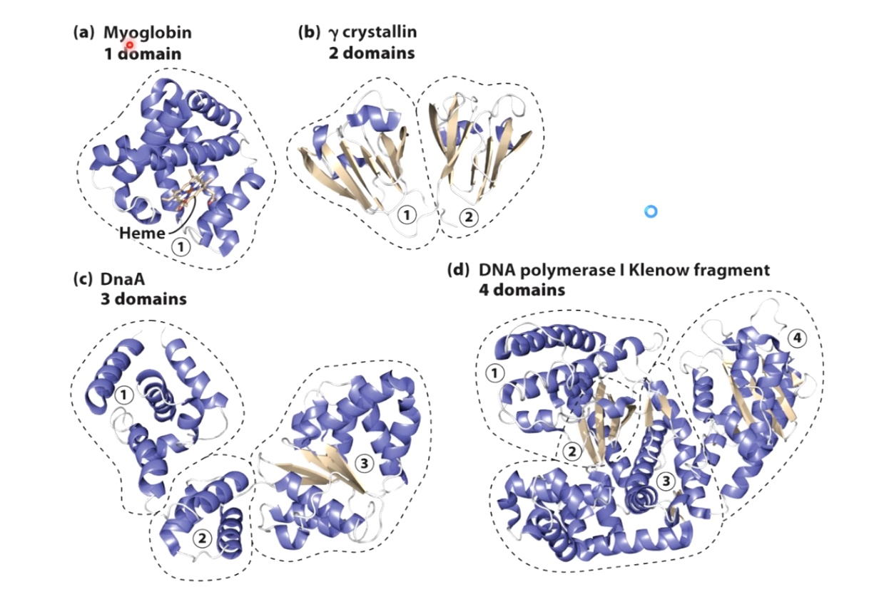
a. made all of alpha helix
b. made of beta sheets and alpha helix
c. Three main modules
d. Four different domains
One advantage of dividing proteins into these modular domains: if you have a mutation that affects one domain, it oftentimes will not affect the folding of the other domains within the protein. Which will partial function of the protein to continue.
Ways to visualize protein structures
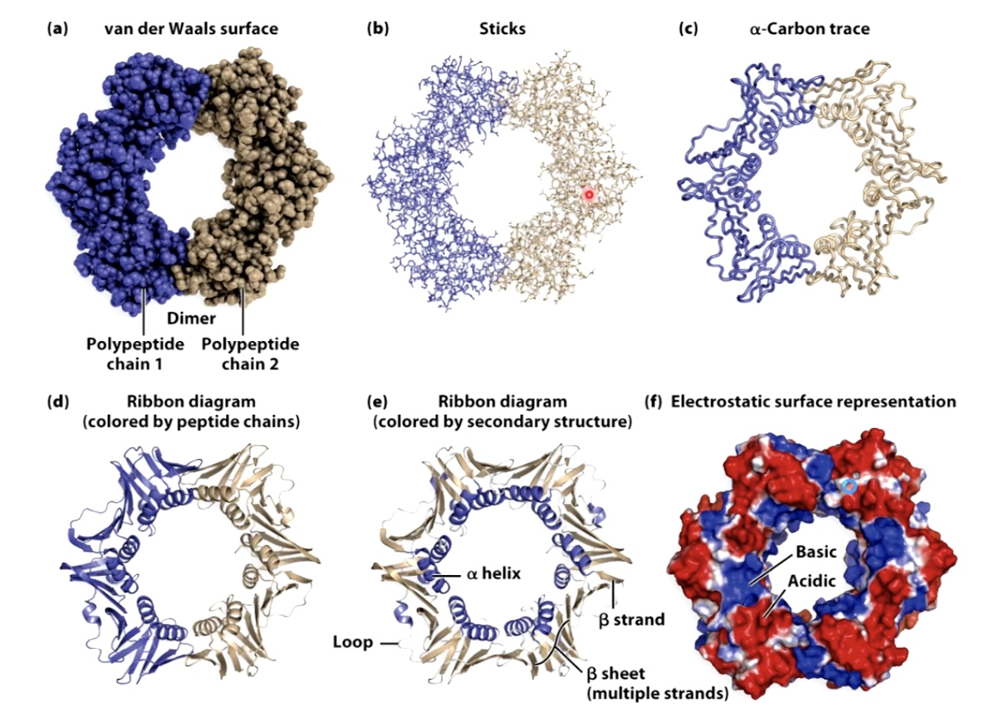
Ribbon diagram shows alpha helix and beta sheet.
How do proteins fold into the complex tertiary and quaternary structures
- Properly folded proteins have low free energy and low entropy.
- Low entropy means the structure should maximize the number of productive hydrogen bonds, hydrophobic interactions and electrostatic interactions.
- Number of possible folds is mind-boggling
- But options quickly decrease as secondary structures form and hydrophobic pockets form
- Molten Globule States
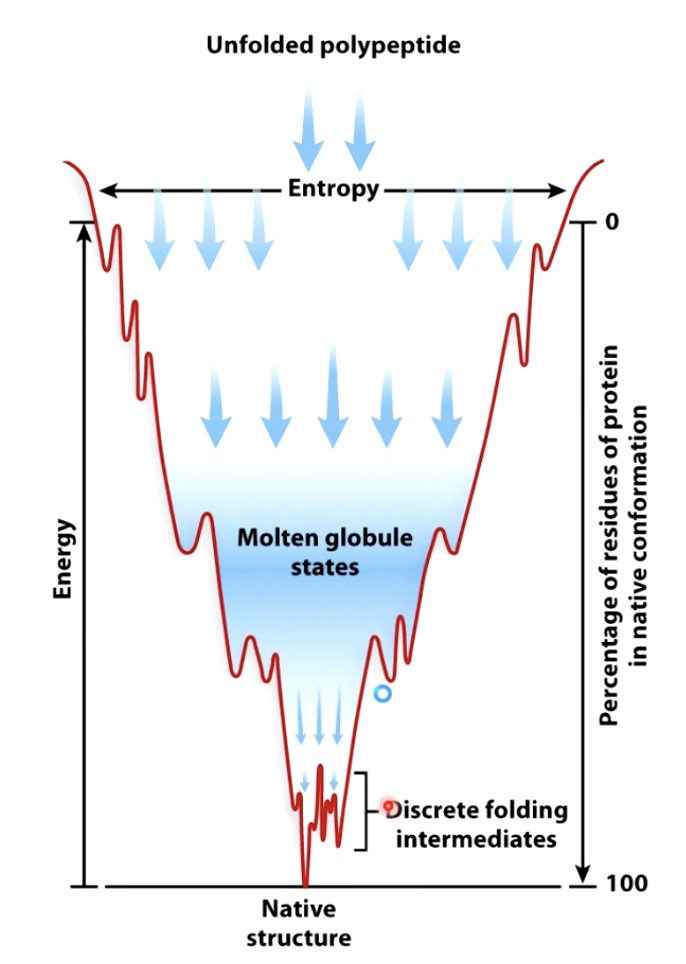
- Molten Globule States
Several Models Causing Proteins to Fold Quickly
- Hydrophobic residues often bury themselves in the middle of the protein.
- Secondary structural elements form locally and nucleate the folding of the rest of the protein.
- 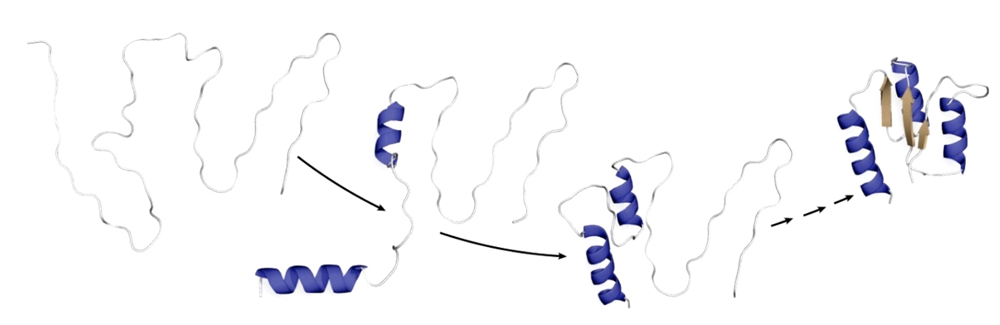
- The alpha helix even form within the ribosome before they are extruded out of the exit channel.
- Chaperones and chaperonins can mediate non-spontaneous protein folding
- Chaperones
- Bind incompletely folded proteins and facilitate correct folding or provide microenvironment in which folding can occur
- Prevent aggregation
- ATP hydrolysis required.
- Example: heat shock proteins(highly regulated when cells are stressed with high temp)
- Chaperonins
- Big protein complexes, unfolded proteins bind in the inner chambers
- ATP hydrolysis required
- Example: GroEL.GroES in E.coli
- Chaperones
Proteins Fold Incorrectly
Example
Prions: an example of protein folding gone awry
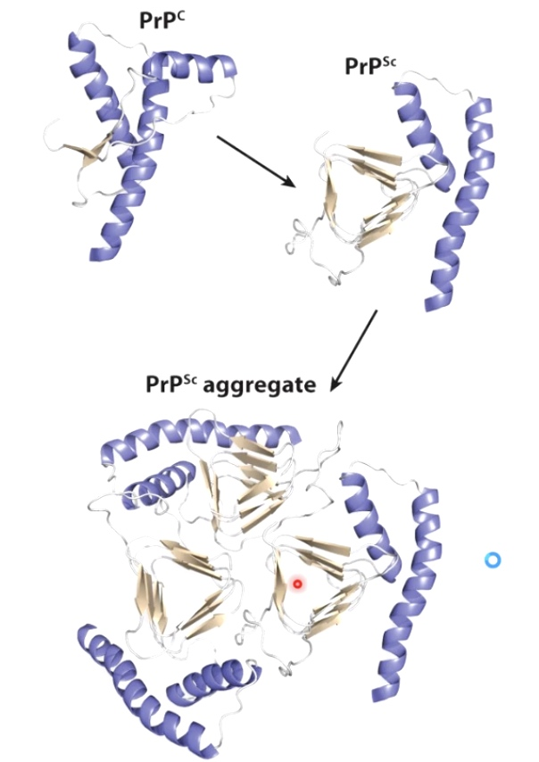
Misfolded PrP proteins aggregate, form fibers that lead to plaques and cell death.
Western Blotting
A technique allow researchers to detect the changes in a particular protein of interest such as changes in concentration. addition or subtraction of small chemical modificaitons and changes in interactions with other proteins.
Procedures
- Proteins are isolated form the rest of the cell's components by chemical-based and/or physical-based methods to disrupt cell's plasma membrane and release protein inside it.
- After lysis, cells and their contents are are spun in microcentrifuge. This result into an aqueous supernatant, which results into an aqueous supernatant which contains solubilized proteins and a pellet, which contains membranes, organelles, nucleic acids and any remaining insolubilized proteins.
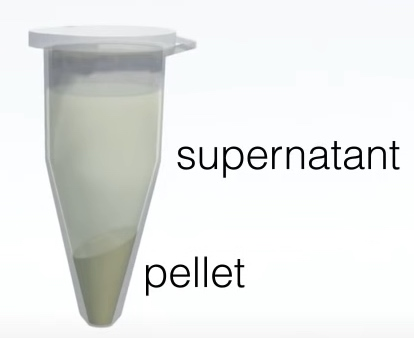
The supernatant also called protein lysate is seperated from the pellet to use for western blotting. The most common type of protein lysate that researchers prepare is called "whole cell lysate" because it contains all of the proteins within a cell. Two other types of protein lysate are nuclear and cytoplasmic lysates, which are often used for protein localization in this two area.
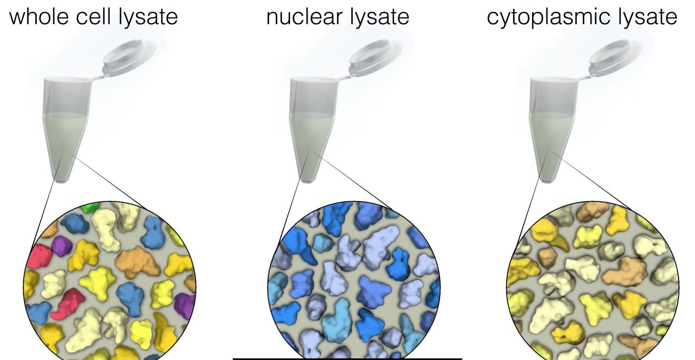
Fourth commonly used lysate type is immunoprecopitate or IP. An IP is performed to identify and detect proteins that may interact with a protein of interest. To perform an IP, the protein of interest is isolated from lysate, by th eaddition of an antibody that specifically recognizes the protein of interest.
To prevent unwanted modifications, unfolding and degradation, lysis is performed at a low temperature and in the presence of various enzymatic inhibitors.
- Proteins are loeaded onto a gel and seperated from on e anoother using an electrical current during "polyacrylamide gel electrophoresis" or PAGE.
- The seperated proteins are transferred onto a membrane and the protein of interest is visualized using a protein specific antibotdy.
Procedures (edition 2nd)
- Sample Preparation
- Extract proteins from tissues and cells.
- Gel eletrophoresis
- The most commonly used gel is PAG and buffers loaded with SDS.
- Proteins transfer
- Proteins are moved from within the gel onto a solid support membrane to make the proteins accessible to antibody detection. The main method for transferring proteins is called electroblotting. The membrane is placed between the gel surface and filter.
- Blocking
- Blocking is an important step in the western blot to prevent antibodies from binding to the membrane non-specifically.
- Antibody Incubation
- After blocking, the primary antibody binds to target protein when the primary antibody is incubated with the membrane.
- Protein detection and visualization
- A substrate reacts with the enzyme that is bound to the secondary antibody to generate colored substance.